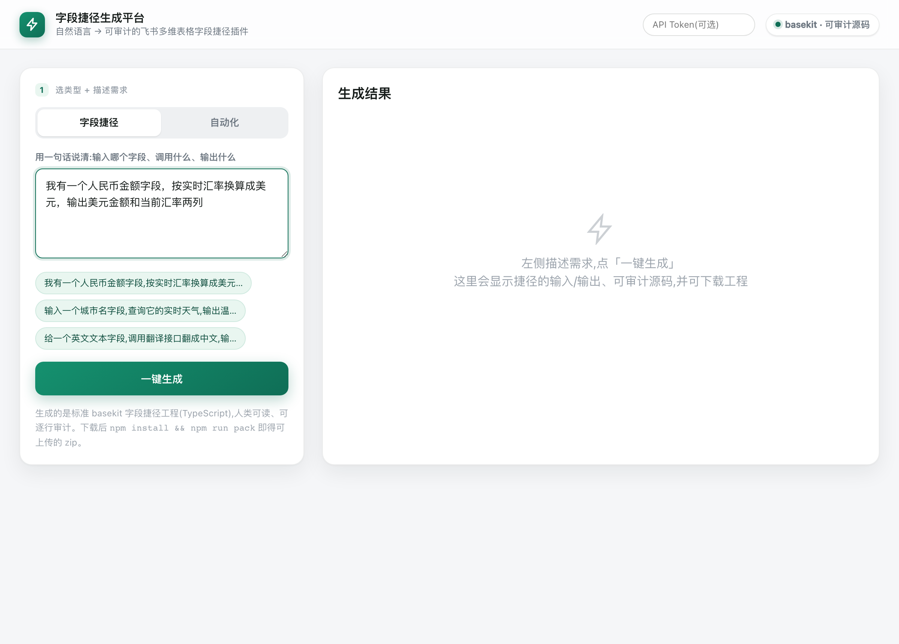
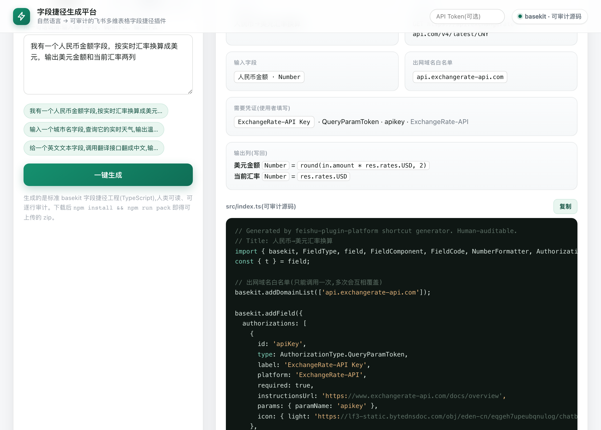
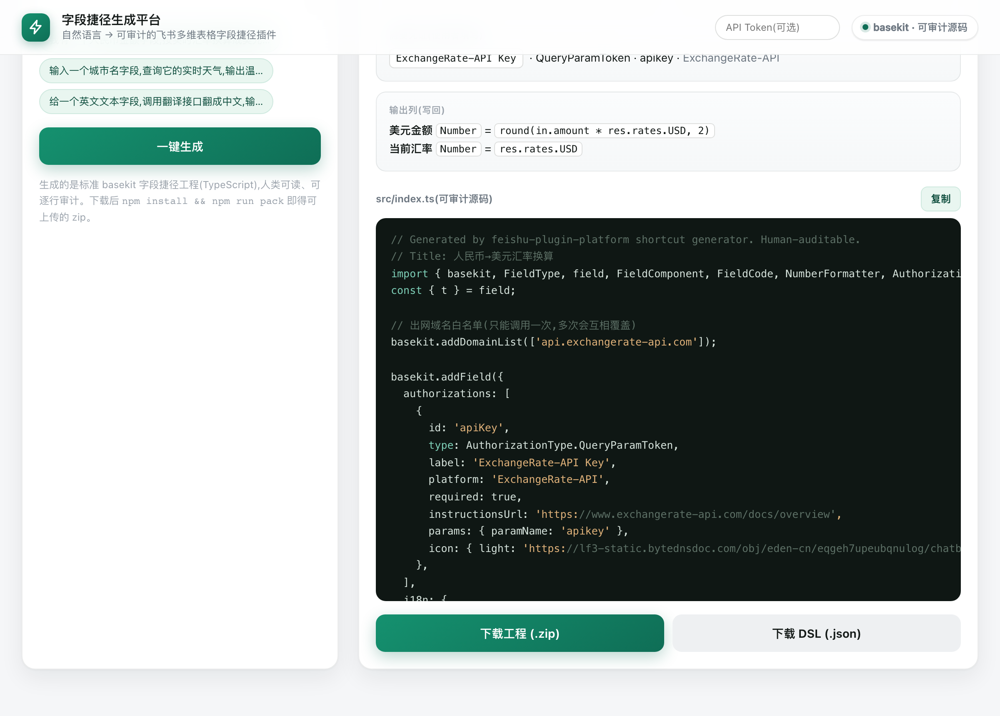
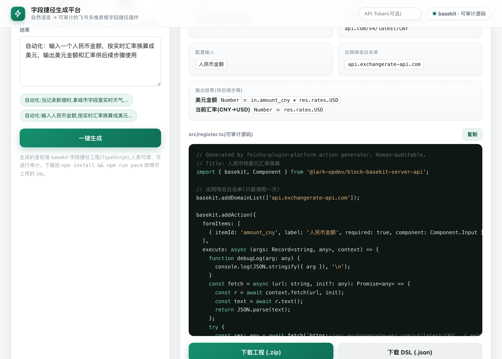
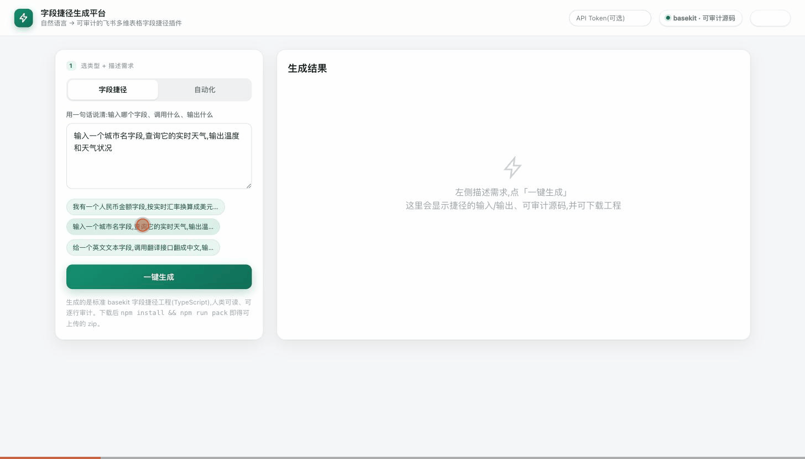
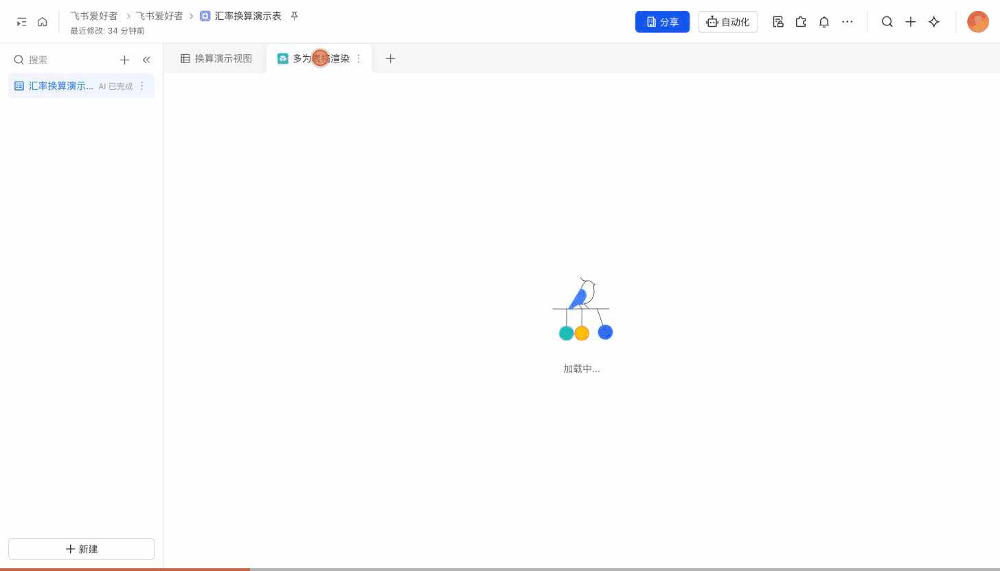
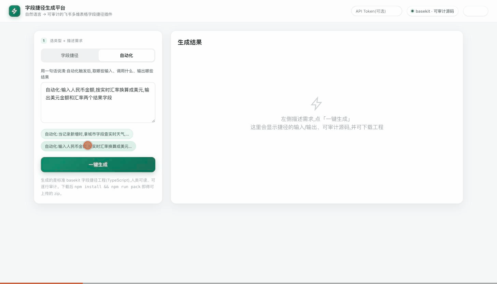
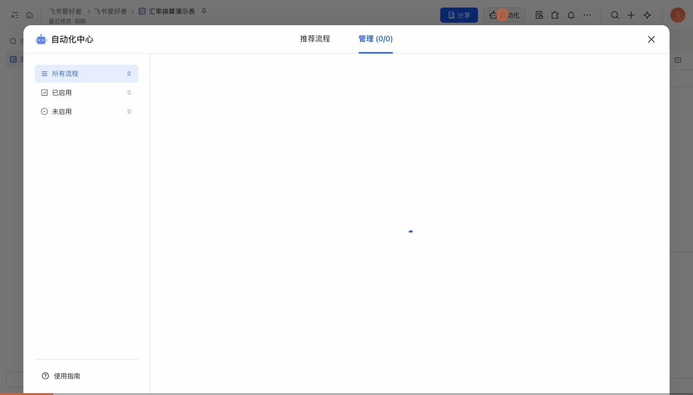

自然语言一句话描述需求 → 生成可人工逐行审计的真实飞书 basekit 插件（TypeScript），直接上传到飞书使用。NL → DSL → auditable TS → real Feishu.
下面是平台的真实生成全过程（实机录屏，仅做加速展示）：输入自然语言 → 调用模型生成并校验 → 产出带「出网域名白名单 / 鉴权 / 输出列映射」的可审计 src/index.ts，再一键下载工程 zip。Real screen recording — not a mockup.




字段捷径与自动化各一对录屏:左为一句话生成,右为在真实多维表格中使用——同一个插件,从生成到落地。Each plugin type: generate (left) → use it in a real Bitable (right).
在数据表里加一列「天气」,对每行的「城市」自动算出温度/风速(数据来自自托管 execute 运行时)。


在自动化流程里调汇率接口,把人民币金额换算成美元 + 汇率,供后续步骤消费。


「连接器 / 字段捷径」这类要调外部 API 的插件,执行逻辑跑在你自己部署的 execute-runner 上——自托管、出网集中可审计、无外部函数托管;改完代码到上线,一条命令完成。这是企业选型的关键之一。
插件要调外部接口时,经 api → execute-runner 执行(解释声明式 DSL,绝不 eval)。三道硬护栏:不执行用户 JS · 出网域名白名单 + SSRF 防护 · 只读不写宿主。整条出网集中一处,便于审计。
多维表格里「城市」一列,插件自动算出「温度 / 风速」一列,数据来自自托管运行时(无外部函数托管)。实测:Beijing 21.4℃、Tokyo 20.6℃、London 26.4℃、Paris 27.7℃。
后端(api / generator / execute-runner / caddy)+ 容器插件 widget,一条命令构建、上传、滚动重启。compose 单机或 k8s 皆可,平滑切换。
平台自身的数据(插件定义 / 归属)也存进多维表格——不引入 Postgres/Redis 等外部数据库,企业自托管少一个要部署、加固、备份的组件;durability 由飞书托管,管理员还能在表里直接查看、审计每条定义。读路径带 TTL 缓存 + 按表查询,适配读密集的大规模使用。
改完代码 → 上线,一条命令:
# 一次性配置:cp scripts/deploy.example.env scripts/deploy.env(填服务器/域名/appId） $ scripts/release.sh "城市天气字段捷径" ═══ ① 部署后端 ═══ api · generator · execute-runner · caddy → 滚动重启 + 健康检查 ✓ ═══ ② 发版 widget ═══ 注入后端地址 → webpack 构建 → opdev 上传新版本 ✓ # 末步:控制台「选版本 + 发应用版本」(免审租户即时;可进一步 API 全自动)
已端到端部署上线:生产为单机 docker compose + Caddy 自动 TLS(经 <ip>.sslip.io 魔法 DNS 由 Let's Encrypt 签发,STORE=bitable)跑在一台 AWS EC2 上;k8s 为可选的横向扩展路径。脚本与完整手册见仓库 scripts/ 与 OPERATIONS.md;部署细节见 deploy/compose/DEPLOY.md 与 deploy/k8s/。
你有多维表格和插件能力，却没有插件市场、也没有专职开发团队。这套平台把「想要一个插件」到「拿到一份可上线、可审计的源码，并一键发版部署」之间的距离，压缩成一句话。Built for enterprise Feishu.
源码自带 provenance，是人类可读的 TypeScript 而非黑盒——可在内部完成代码审计后再送审上线;执行运行时自托管在你自己的服务器上,出网集中可审计。
运营、HR、财务想接一个外部 API 到表格里，却不会写 TypeScript。用自然语言描述即可。
没有现成插件可装？把需求口述出来，平台直接产出一份可上传的 basekit 工程 zip。
无论是「在表格里加一列、自动算出来」，还是「在自动化流程里调一个 API」，都能从一句话生成。
选输入字段 → 调外部 API → 把结果写回输出列。4 种鉴权、GET/POST/PUT/PATCH/DELETE + 嵌套 JSON body、多步链式（后一步用前一步响应）、条件逻辑（if/eq/gt/coalesce）、多列 Object 输出。
"读取『金额(USD)』列，调汇率 API 换算成人民币，结果写到『金额(CNY)』，保留两位小数。"
HeaderBearer / QueryParam / CustomHeader / Basicin.<输入> · res.<路径> · 算术 · 函数(trim/upper/round…) · 条件(if/eq/gt) · split配置输入 → 调一个外部 API → 返回结果对象，供后续自动化步骤消费。接入飞书 Base 的自动化流水线。
"输入城市名，调天气 API，返回温度和天气状况，供后续『发送通知』步骤使用。"
APIKey / OAuth2，支持 GET/POST + body两类插件的「生成 → 在真实多维表格中使用」录屏,见上方「插件在飞书多维表格中的实际使用」。
每一项都经 testField/testAction 真调外部 API，或对真飞书 Base 写读确认——不是只编译通过。Every capability verified on a real machine, not just compiled.
GET→JSON 取数 · AI 入格（POST 嵌套 body，如 DeepSeek）· 文本/数学函数（trim/upper/substr/round/floor…）· compute-only「URL 即结果」。
比较 / 布尔 / 分支以函数形式表达（eq/gt/and/if/coalesce）——语法绝不放原始 < > ? :，从不 eval。例：身份证按第 17 位奇偶判性别。
GET/POST/PUT/PATCH/DELETE + 自定义请求头 + 嵌套 body；多步链式——后一步用前一步的响应（如「取 token → 带 token 调 API」）。
自动化动作调飞书 OpenAPI（取 token → batch_create）把数据写成多维表格记录——已真机写入一条并读回确认。不生成数据连接器。
Text / Number / DateTime / Checkbox / SingleSelect / Phone / Email / Currency / Progress / Rating / Barcode / Url（可点击） / MultiSelect（多选）。
飞书 OAuth 登录；每个人创建的插件按 open_id 归属个人、可持久化（Bitable，重启不丢）；源码与 dsl.json 带创建者署名。
DSL 只是 LLM 的结构化中间表示，不是运行时；真正交付的是一份你看得懂、改得动的 TypeScript 工程。
描述输入字段、要调的 API、要写回的输出。中文即可。
LLM 经强制 function 调用产出结构化 JSON；schema 与校验器同源，失败自动修复 ≤2 轮。
Go 渲染出带 provenance 的 basekit 工程；对真 SDK 类型编译通过。
本地真调外部 API 验证，再上传飞书，安装启用即用。
LLM 永远不写最终代码——它只产出受约束的 DSL；可审计的 TypeScript 由确定性的 Go 渲染器生成。Deterministic codegen, LLM stays in the planning lane.
护栏在生成阶段静态生效，不依赖运行时沙箱；加上人类可读的源码，让政企客户能在送审前自行核验每一行。
每个外部请求的目标域名在生成时做静态预检；不在白名单内则拒绝产出，杜绝意外出网。
映射表达式走受限白名单文法（in. / res. / 算术 / 函数 / 条件(if/eq/gt) / split），绝不 eval、绝不执行任意代码。
URL 模板中的占位符与字段、鉴权参数严格对应；非法或悬空占位符在生成期即被拦下。
每一次出网调用都向专用的 audit_log 多维表格写入一条只追加（append-only）的 execute.egress 审计事件（含 actor / 目标域名 / 方法 / 结果；SSRF / 重定向拦截记为 error）；管理员经 GET /api/audit 查询。热路径安全：始终落 stdout + 异步缓冲单 worker，关停时优雅排空不丢记录。
下面是字段捷径生成器的代表性产物片段——你拿到的就是这样一份可读、可改、可审计的 basekit 源码。
"读取『金额(USD)』列，调汇率 API 把美元换算成人民币，结果写到『金额(CNY)』，保留两位小数。"
生成器先经 LLM 产出受约束 DSL，再由 Go 渲染器输出右侧 TypeScript。每个 basekit API 都是真实 SDK 调用，可对 @lark-opdev/block-basekit-server-api 类型直接编译。
// generated by feishu-plugin-platform · provenance: dsl@usd2cny import { basekit, FieldType, AuthorizationType } from '@lark-opdev/block-basekit-server-api'; const { t } = basekit; // guardrail #1 — 出网域名白名单（生成期静态预检） basekit.addDomainList(['api.exchangerate.host']); basekit.addField({ formItems: [{ key: 'amountUsd', label: '金额(USD)', component: { type: 'FieldSelect', props: { supportType: [FieldType.Number] } }, }], authorizations: [{ id: 'rateAuth', type: AuthorizationType.HeaderBearerToken, // 4 选 1 鉴权 }], // guardrail #3 — URL 占位符对齐已校验字段/鉴权 execute: async (formItemParams, context) => { const usd = formItemParams.amountUsd?.[0]?.value; const res = await context.fetch( `https://api.exchangerate.host/convert?from=USD&to=CNY&amount=${usd}`, { method: 'GET' }, ).then(r => r.json()); // guardrail #2 — 受限表达式 allowlist（绝不 eval） // dsl: out.cny = res.result ; round(2) const cny = Number(res.result.toFixed(2)); return { code: FieldCode.Success, data: { cny } }; }, resultType: { type: FieldType.Number, extra: { formatter: '0.00' }, // NumberFormatter }, }); export default basekit;